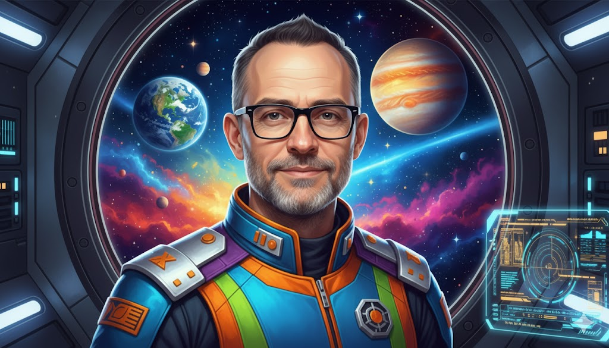
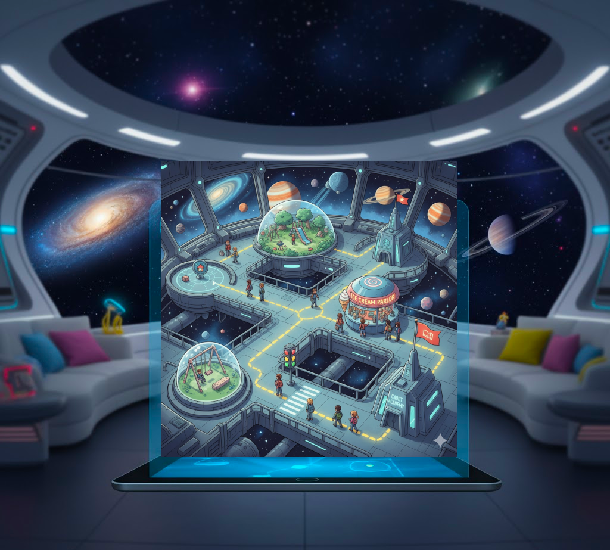
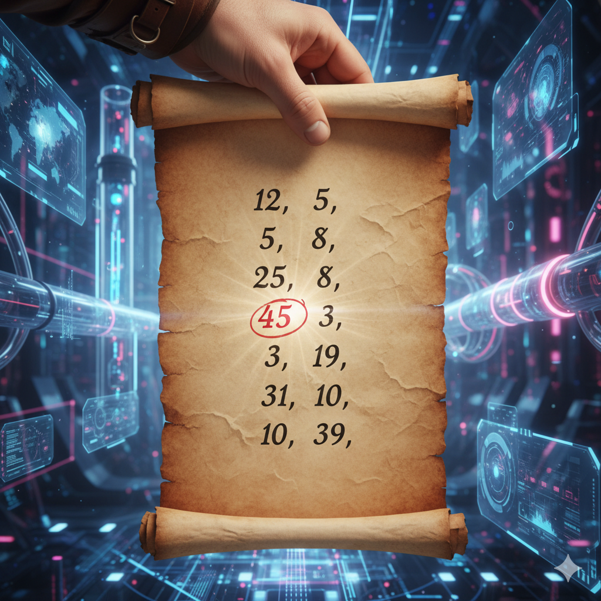
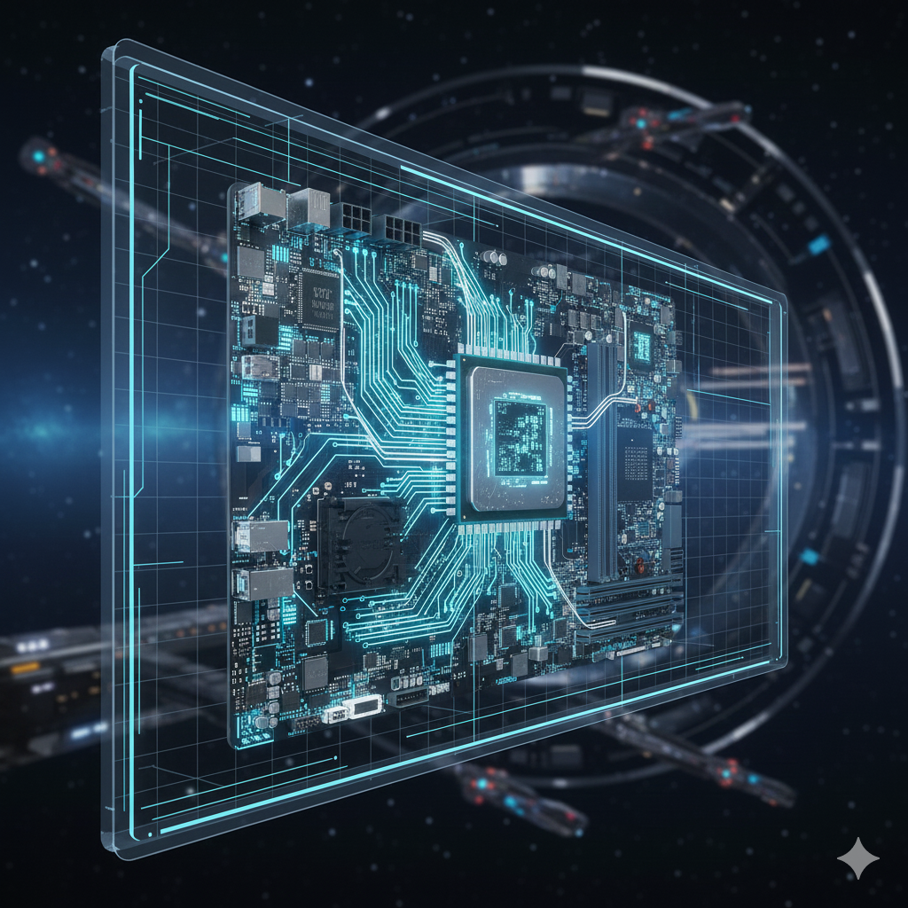
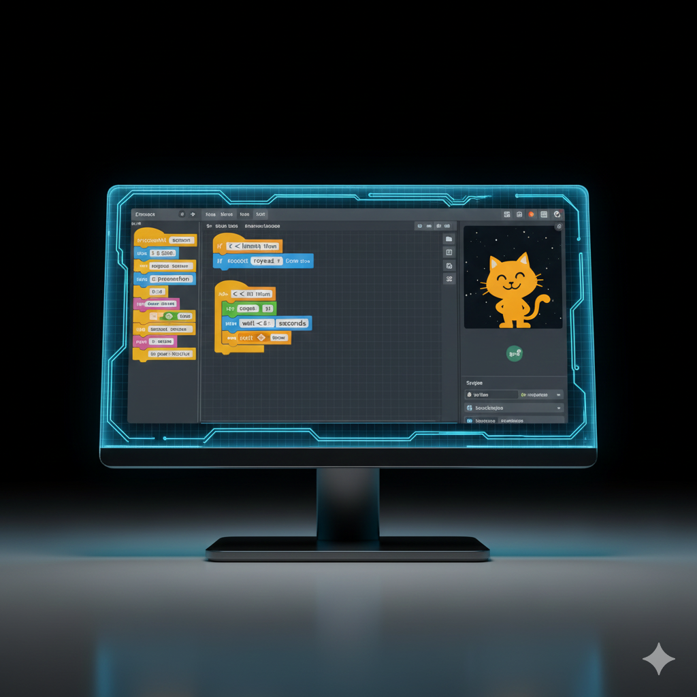
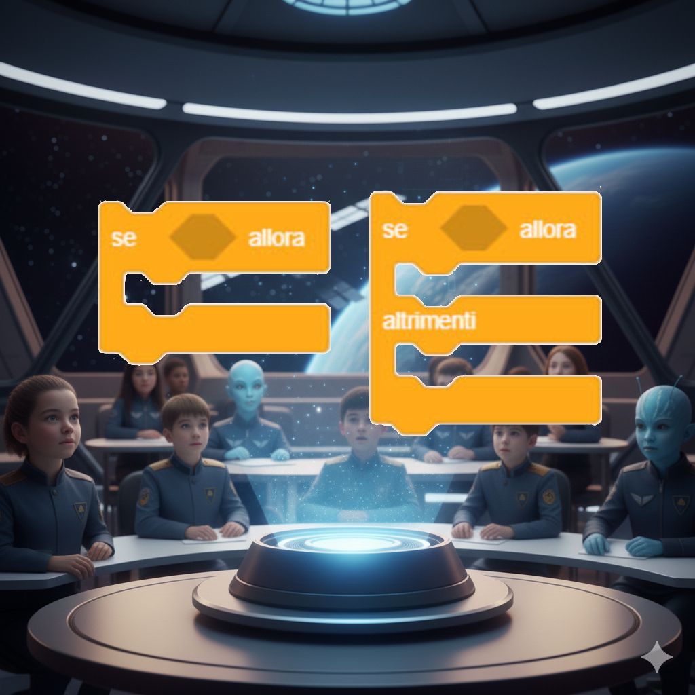
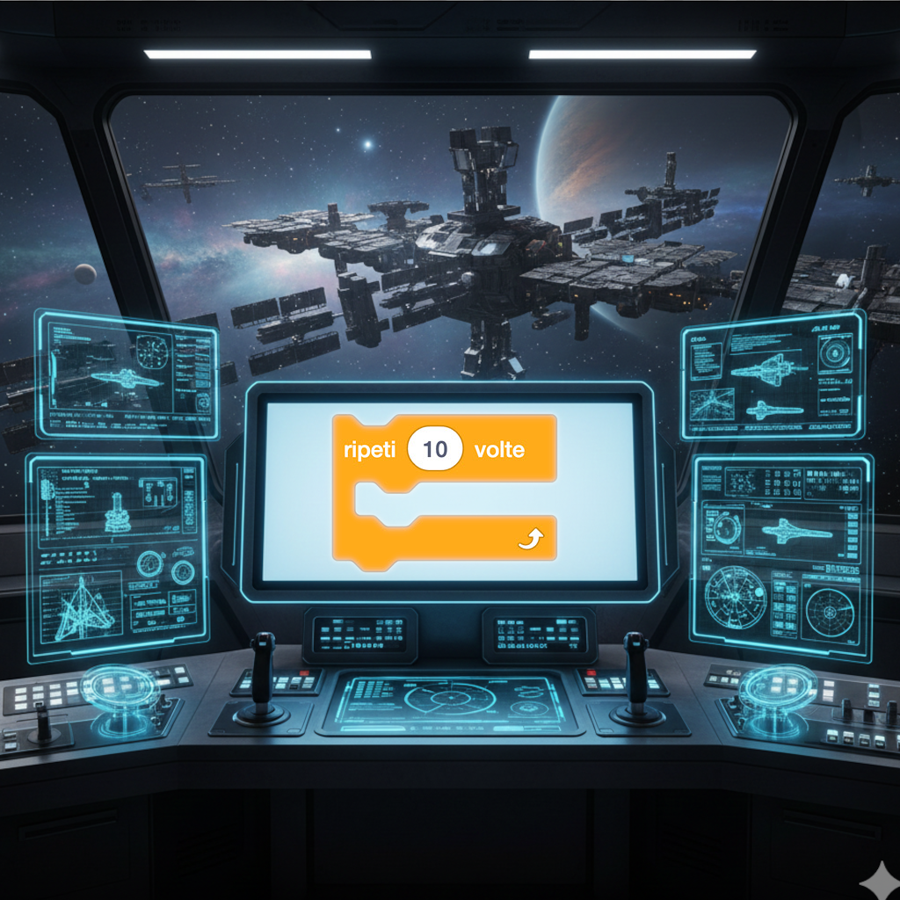
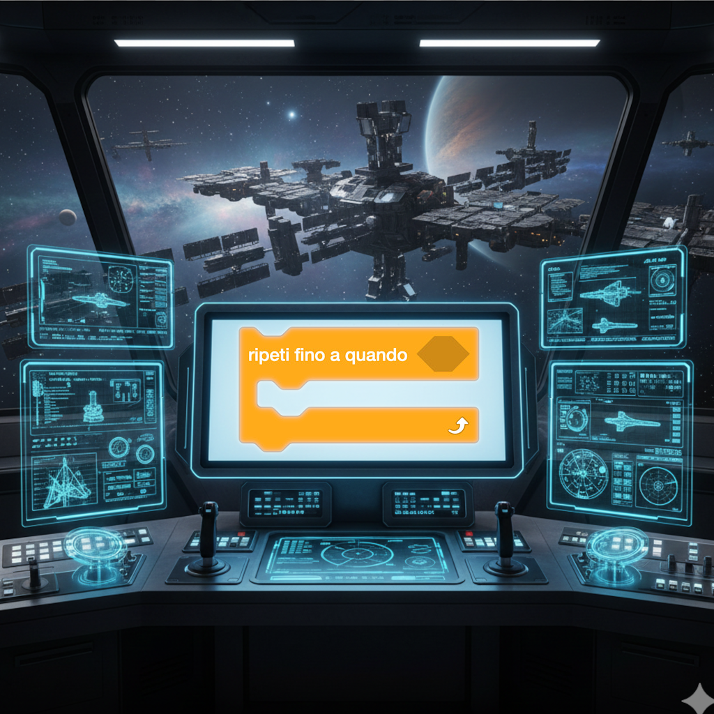

欢迎，年轻的太空探险家们！
嗨，年轻的朋友们，我是卢西亚诺导师，你们的太空教练！我将在这里带领你们开启一场非凡的编程世界冒险，在这里我们将学习如何向计算机发出指令，来创建游戏、动画和太空任务！

卢西亚诺导师留言："记住，无论是在太空中还是在编程中，每一段伟大的旅程都始于一小步。我们将一起探索知识的银河！"
你知道吗？ 编程适合所有人！阿达·洛芙莱斯，一位杰出的数学家，被认为是历史上的第一位程序员。今天，像凯蒂·布曼这样的女性，她为拍摄黑洞照片做出了贡献，继续在科技领域做出惊人的发现！
在我们的任务中，我们将探索：
- 什么是算法 任务 1。
- 计算机如何工作 任务 2。
- 积木编程 任务 3。
- 编程基础原理 任务 4。
- 如何使用Scratch创建项目 任务 5。
1. 以下哪项是算法的序列？
A. 刷牙：拿起牙刷，挤牙膏，刷牙，漱口。
B. 踢足球：跑，跳，唱，游。
C. 读书：打开，合上，打开，合上。
2. 谁被认为是历史上的第一位程序员？
A. 阿达·洛芙莱斯。
B. 查尔斯·巴贝奇。
C. 艾伦·图灵。
任务 1：什么是算法？
算法是为解决问题或完成任务而按顺序执行的一系列步骤。我们每天都在使用它们，甚至没有意识到！
卢西亚诺导师说："可以把算法想象成我在起飞前使用的检查清单！每个步骤都必须按正确的顺序执行，任务才能成功。"
现实生活中的例子：
准备一杯热巧克力
- 拿一个杯子。
- 加入可可粉。
- 倒入热牛奶。
- 搅拌均匀。
- 享用热巧克力。
当我们准备热巧克力时，我们遵循特定的步骤：拿一个杯子，加入可可粉，倒入热牛奶，搅拌，最后享用！
去学校

去学校的路线也是一个算法：醒来，穿衣服，吃早餐，背书包，沿着路线走到学校。
1. 以下哪个序列代表了制作三明治的正确算法？
A. 切面包，吃三明治，放奶酪。
B. 拿面包，添加配料，合上三明治。
C. 吃三明治，准备三明治，买面包。
2. 为什么在算法中步骤的顺序很重要？
A. 因为否则计算机会生气。
B. 因为有些步骤依赖于前面的步骤。
C. 因为这样看起来更美观。
任务 2：计算机科学中的算法
在计算机科学中，算法是我们告诉计算机执行以解决问题的一系列指令。
卢西亚诺导师说："计算机就像听话的宇航员：它们完全按照我们给出的指令执行。因此我们必须非常精确！"
数字世界的例子：
在列表中找出最大的数字

开始
将第一个数字设为"最大值"
对于列表中的每个数字：
如果这个数字大于"最大值"
将"最大值"更新为此数字
结束
按高度排列书籍
想象一下你需要将你的书从最小到最大排列。你会遵循特定的步骤，就像计算机会做的那样！
你知道吗... 格蕾丝·霍珀，一位杰出的科学家，发明了第一个编译器，这是一个将人类语言翻译成计算机指令的程序。她的发现使得我们今天所知的编程成为可能！
1. 排序算法是做什么的？
A. 删除无用的数据。
B. 按特定顺序组织数据。
C. 创建新的随机数据。
2. 为什么在给计算机编程时算法必须精确？
A. 因为计算机速度慢。
B. 因为计算机会完全按照所说的执行。
C. 因为计算机很容易感到无聊。
👩💻
科技领域的女性
其他在科技领域重要的女性。
任务 3：计算机如何工作
计算机是遵循精确指令处理信息的非凡机器。
卢西亚诺导师说："把计算机想象成我们的任务控制中心：它接收信息，处理信息，并产生结果！"
计算机的主要组件：
CPU - 计算机的大脑

CPU（中央处理单元）是执行程序指令的计算机大脑。
内存 - 工作台
RAM内存就像一张桌子，计算机把当前正在使用的信息放在上面。
1. 计算机中的CPU是做什么的？
A. 在屏幕上显示图像。
B. 执行程序的指令。
C. 长期存储文件。
2. 计算机的哪个组件像工作台？
A. 硬盘。
B. RAM内存。
C. 显卡。
任务 4：积木编程
积木编程是一种学习编程的简单直观方式。
卢西亚诺导师说："积木就像建筑积木：每个都有特定的功能，结合在一起可以创造出令人惊奇的东西！"
积木类型：
控制积木

控制积木决定何时以及如何执行指令。
1. 积木编程的优势是什么？
A. 它比文本编程更快。
B. 对初学者来说更容易理解。
C. 它比文本编程更强大。
2. 控制积木是做什么的？
A. 改变背景颜色。
B. 决定何时执行指令。
C. 为项目添加声音。
任务 5：条件语句
条件语句允许计算机根据特定条件做出决策。
卢西亚诺导师说："条件就像探索过程中的岔路口：根据你遇到的情况，你决定走哪条路！"
条件示例：
如果...那么...
如果下雨，那么我带伞。这是我们每天使用的简单条件！
如果...那么...否则...

如果我饿了，那么我吃东西，否则我继续玩耍。这个条件有两种可能的结果。
1. 条件语句是做什么的？
A. 总是执行相同的操作。
B. 根据条件决定执行哪个操作。
C. 多次重复一个操作。
2. 以下哪项是"如果-那么-否则"条件的例子？
A. 如果下雨，我带伞。
B. 如果下雨，我带伞，否则我戴太阳镜。
C. 我带伞和戴太阳镜。
任务 6：循环和重复
循环允许重复一个操作多次，而不必每次都重写它。
卢西亚诺导师说："循环就像宇宙飞船的引擎：一旦启动，它们就会持续运行，直到你停止它们！"
循环类型：
"重复...次"循环

重复10次：跳跃。这个循环将执行跳跃动作恰好10次。
"重复直到"循环

重复直到完成作业：学习。这个循环将持续直到条件满足。
1. 为什么我们在编程中使用循环？
A. 因为它们看起来更漂亮。
B. 为了避免多次重复相同的代码。
C. 因为计算机更喜欢它们。
2. 哪个循环重复特定的次数？
A. 重复...次。
B. 重复直到。
C. 永远重复。
最终任务：你的编程之旅继续！
做得好，太空学员！你已经成功完成了编程基础培训。但这只是你旅程的开始！
卢西亚诺导师说："现在轮到你了！像真正的宇航员一样，你必须掌控你的飞船，继续探索编程的银河。好奇心将是你的燃料！"
你的下一个目的地：
Scratch - 创意的星球
访问 Scratch，用积木编程创建交互式故事、游戏和动画。这是开始你冒险的完美地方！
Code.org - 学习的星星
探索 Code.org，发现免费的课程和活动，它们将一步步引导你进入编程世界。
分享的精神： 全世界许多人努力创建免费资源来帮助你学习。这就是开源和自由软件的精神——为所有人的利益分享知识！
在数字宇宙中安全航行：
互联网的两面性
互联网就像一个有两面的宇宙：它可以是一个学习和成长的绝妙之地，但如果使用不当，也可能很危险。
如何识别有效的网站：
✅ 寻找教育机构（学校、大学、博物馆）的官方网站
✅ 检查网址是否以"https://"开头（"s"表示安全）
✅ 验证信息是否及时更新（查找发布日期）
✅ 寻找你的母语和中文的网站以比较信息
❌ 警惕有太多广告或要求个人数据的网站
永远记住： 当你在互联网上浏览时，一定要在你信任的成年人的监督下进行。与他们分享你的发现，当有事情让你不确定时寻求帮助！
知识的终极算法：
- 保持好奇心：对你感兴趣的一切提出问题
- 寻找资源：安全地使用互联网查找信息
- 实验：尝试，犯错，学习，再尝试
- 分享：把你发现的东西告诉别人
- 持续学习：知识的旅程永无止境！
你在编程旅程中的下一步是什么？
A. 我将在成年人的帮助下探索Scratch和Code.org！
B. 我将继续带着好奇心和注意力学习！
C. 我将与朋友们分享我学到的东西！
注意： 在这个任务中，所有答案都是正确的！重要的是你继续你的学习之旅。